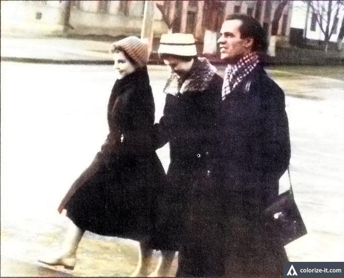
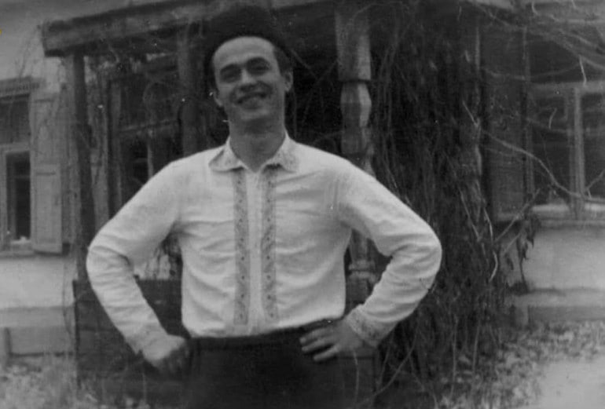
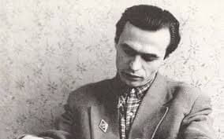
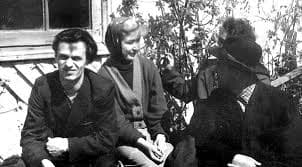
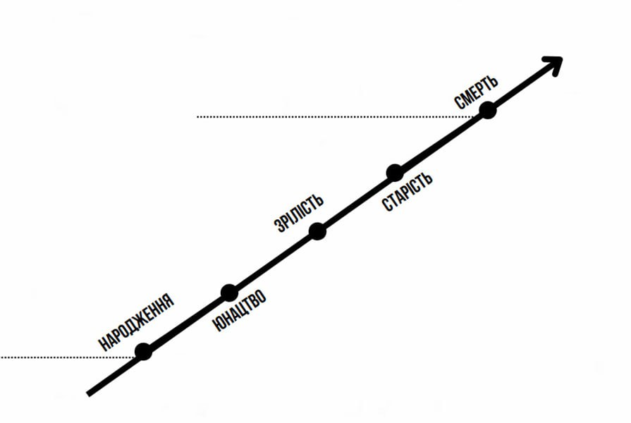
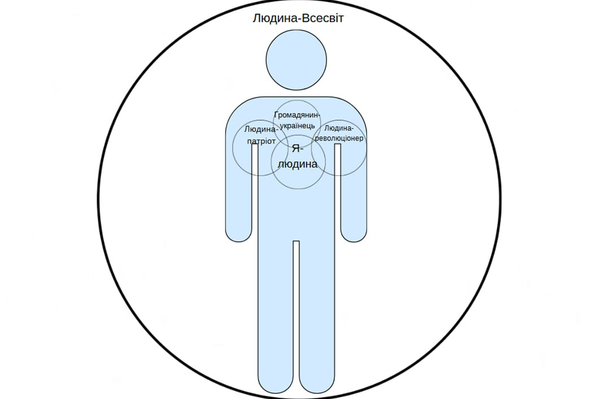

Василь Симоненко
Коротка біографія
Василь Андрійович Симоненко (8 січня 1935, с. Біївці, Полтавщина — ніч з 13 на 14 грудня 1963, Черкаси) — український поет, журналіст, один із найяскравіших представників покоління шістдесятників.
Зростав без батька. Хлопчика виховувала матір, а частково допомагав і дідусь. Дитинство припало на роки війни й повоєнну скруту, що загартувало характер юнака. Закінчив школу із золотою медаллю, навчався на факультеті журналістики Київського університету імені Тараса Шевченка.
Працював журналістом у черкаських газетах. Брав активну участь у Клубі творчої молоді, був близький до кола Ліни Костенко, Івана Драча, Василя Стуса, Євгена Сверстюка. За життя вийшла лише одна поетична збірка — «Тиша і грім» (1962) та казка «Цар Плаксій та Лоскотон».
Після побиття міліціонерами тяжко захворів. Помер у 28 років. Посмертно став символом моральної чистоти й громадянської відваги. Шевченківську премію отримав уже в незалежній Україні.
Цікаві факти про Василя Симоненка
- Він став «поетом без каменю за душею» (за виняткову щирість і моральну чистоту).
- Василь Симоненко зростав без батька і довгий час вважав це «нормою життя».
- До школи ходив пішки понад 9 км, але закінчив її із золотою медаллю.
- Своє кохання Людмилу «причарував» вином із троянд, яке називав «Симоне».
- Називав дружину ніжно: Люся-малюся, Люсьєн.
- Був учасником розслідування масових поховань жертв сталінських репресій (Биківня).
- Його вірші часто переписували від руки (через заборону цензурою).
- Після смерті поета його не видавали в Україні 15 років.
- У кабінеті Симоненка зберігалася підкова на щастя, яку знайшли вже в музеї.
- Останній вірш він написав у лікарні, за кілька днів до смерті.
- Його слова «Ти знаєш, що ти — людина?» стали моральним кредо для поколінь.
- Прожив лише 28 років, але став одним із найвпливовіших поетів ХХ століття.
Світлини з життя письменника
- 
- 
- 
- 
Концепція особистості (натисніть сюди)
-
Система авторських поглядів на сутність людини
-
Естетичні й духовні аспекти в художньому образі
-
Психологічна та соціальна природа індивідуума
-

Письменник послідовно утверджує концепцію мислячої активної людини, поєднуючи народнопоетичні та біблійні мотиви (народження, юнацтво, зрілість, старість, смерть), репрезентуючи єдність матеріального й духовного, протиставлення активної життєвої позиції пасивному існуванню.
-

Ключовою умовою становлення особистості є здатність до усвідомленого самовизначення та відповідального ставлення до власних дій, що зумовлює її моральні орієнтири й внутрішню стійкість. Таке поєднання формує цілісне світобачення людини, її життєву позицію та систему цінностей, у яких важливе місце посідають громадянська свідомість, духовна прив’язаність до Батьківщини, родинні засади й повага до унікальності кожної особистості. Саме ці риси окреслюють провідні аспекти концепції людини в поезії Василя Симоненка: